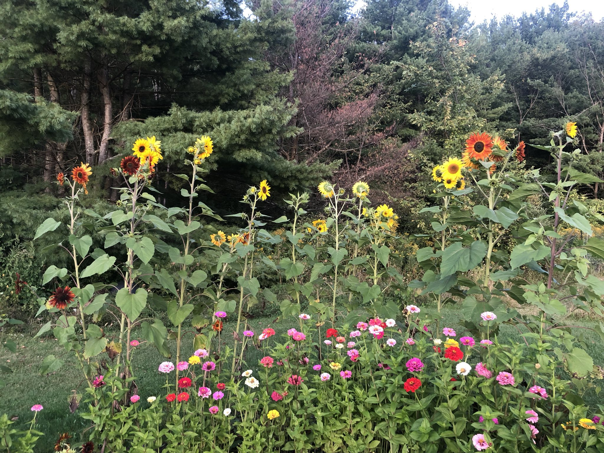
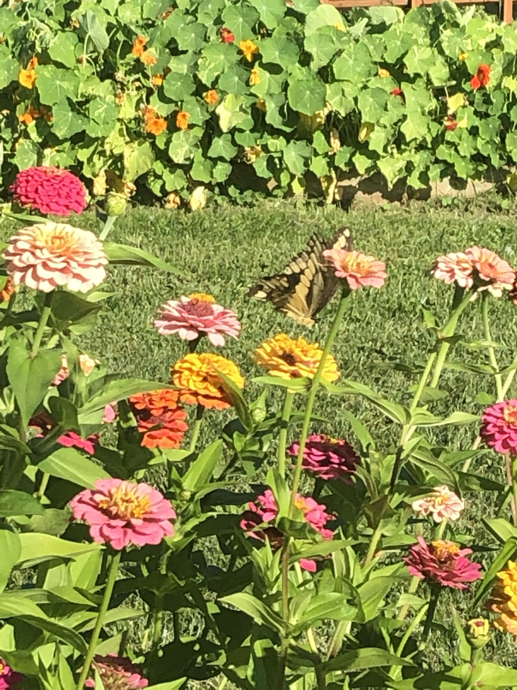

October 2019
The End Is Just the Beginning

It’s the end of the gardening season in some ways. The annuals are now past, an overnight low of 35 degrees has killed off our zinnias, most sunflowers, and any remaining tender plants. Despite temperature drops, our perennial blooms continue on feeding pollinators. The recent bloom of our shasta daisy and appearance of red berries on our winterberry bushes extends the growing season.

The time has come to plant allium bulbs and purple smokebush, neither of these selections are natives, however they provide benefits to wildlife. As I make preparations for next year, I plan on looking to install native plants. Natives are available through Fedco, however these can also be found locally (the ideal way to obtain plants.) The plants that are on my mind are all on the endangered and threatened plant list for Vermont. It’s a hard reality, gardening isn’t as much about beauty, it’s the thing we must do to save the plants and animals that keep this beautiful place balanced and full of life. I’m planting for the future as much as I am planting for the present.
So what of the garden and its role in our ecosystem? I’m rethinking the very structure of garden itself— what am I planting and why? Some questions that come to mind: Where am I sourcing the plants from? Who will these plantings benefit and how hard will it be to maintain them? What will a dry and hot climate do to plants accustomed to cooler temperatures? How can I help my community see the value of native plants? How can I teach my students the value of native plants?
This winter I’m looking to the opportunity to bury myself in books about the native plants of Vermont.
Some of my winter reads:
Websites:
The Native Plant Trust:
http://www.nativeplanttrust.org
Lady Bird Johnson Wildflower Center:
http://www.wildflower.org
Books:
A New Garden Ethic by, Benjamin Vogt
Bringing Nature Home by, Douglas W. Tallamy
The Imagination of Plants: A Book of Botanical Mythology by, Matthew Hall
Filed in the garden journal · October 2019